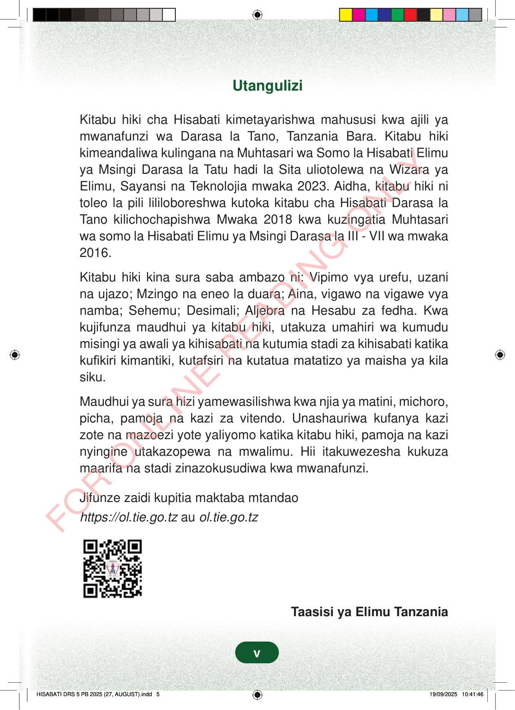

UtanguliziKitabu hiki cha Hisabati kimetayarishwa mahususi kwa ajili yamwanafunzi wa Darasa la Tano, Tanzania Bara. Kitabu hikikimeandaliwa kulingana na Muhtasari wa Somo la Hisabati Elimuya Msingi Darasa la Tatu hadi la Sita uliotolewa na Wizara yaElimu, Sayansi na Teknolojia mwaka 2023. Aidha, kitabu hiki nitoleo la pili lililoboreshwa kutoka kitabu cha Hisabati Darasa laTano kilichochapishwa Mwaka 2018 kwa kuzingatia Muhtasariwa somo la Hisabati Elimu ya Msingi Darasa la III - VII wa mwaka2016.Kitabu hiki kina sura saba ambazo ni: Vipimo vya urefu, uzanina ujazo; Mzingo na eneo la duara; Aina, vigawo na vigawe vyanamba; Sehemu; Desimali; Aljebra na Hesabu za fedha. Kwakujifunza maudhui ya kitabu hiki, utakuza umahiri wa kumudumisingi ya awali ya kihisabati na kutumia stadi za kihisabati katikakufikiri kimantiki, kutafsiri na kutatua matatizo ya maisha ya kilasiku.Maudhui ya sura hizi yamewasilishwa kwa njia ya matini, michoro,picha, pamoja na kazi za vitendo. Unashauriwa kufanya kazizote na mazoezi yote yaliyomo katika kitabu hiki, pamoja na kazinyingine utakazopewa na mwalimu. Hii itakuwezesha kukuzamaarifa na stadi zinazokusudiwa kwa mwanafunzi.Jifunze zaidi kupitia maktaba mtandaohttps://ol.tie.go.tzauol.tie.go.tzTaasisi ya Elimu Tanzaniav
Utangulizi
Kitabu hiki cha Hisabati kimetayarishwa mahususi kwa ajili ya mwanafunzi wa Darasa la Tano, Tanzania Bara. Kitabu hiki kimeandaliwa kulingana na Muhtasari wa Somo la Hisabati Elimu ya Msingi Darasa la Tatu hadi la Sita uliotolewa na Wizara ya Elimu, Sayansi na Teknolojia mwaka 2023. Aidha, kitabu hiki ni toleo la pili lililoboreshwa kutoka kitabu cha Hisabati Darasa la Tano kilichochapishwa Mwaka 2018 kwa kuzingatia Muhtasari wa somo la Hisabati Elimu ya Msingi Darasa la III - VII wa mwaka 2016.
Kitabu hiki kina sura saba ambazo ni: Vipimo vya urefu, uzani na ujazo; Mzingo na eneo la duara; Aina, vigawo na vigawe vya namba; Sehemu; Desimali; Aljebra na Hesabu za fedha. Kwa kujifunza maudhui ya kitabu hiki, utakuza umahiri wa kumudu misingi ya awali ya kihisabati na kutumia stadi za kihisabati katika kufikiri kimantiki, kutafsiri na kutatua matatizo ya maisha ya kila siku.
Maudhui ya sura hizi yamewasilishwa kwa njia ya matini, michoro, picha, pamoja na kazi za vitendo. Unashauriwa kufanya kazi zote na mazoezi yote yaliyomo katika kitabu hiki, pamoja na kazi nyingine utakazopewa na mwalimu. Hii itakuwezesha kukuza maarifa na stadi zinazokusudiwa kwa mwanafunzi.
Jifunze zaidi kupitia maktaba mtandao https://ol.tie.go.tz au ol.tie.go.tz
Taasisi ya Elimu Tanzania
v
UtanguliziKitabu hiki cha Hisabati kimetayarishwa mahususi kwa ajili ya mwanafunzi wa Darasa la Tano, Tanzania Bara.Kitabu hiki kimeandaliwa kulingana na Muhtasari wa Somo la Hisabati Elimu ya Msingi Darasa la Tatu hadi la Sita uliotolewa na Wizara ya Elimu, Sayansi na Teknolojia mwaka 2023.Aidha, kitabu hiki ni toleo la pili lililoboreshwa kutoka kitabu cha Hisabati Darasa la Tano kilichochapishwa Mwaka 2018 kwa kuzingatia Muhtasari wa somo la Hisabati Elimu ya Msingi Darasa la III - VII wa mwaka 2016.Kitabu hiki kina sura saba ambazo ni: Vipimo vya urefu, uzani na ujazo; Mzingo na eneo la duara; Aina, vigawo na vigawe vya namba; Sehemu; Desimali; Aljebra na Hesabu za fedha.Kwa kujifunza maudhui ya kitabu hiki, utakuza umahiri wa kumudu misingi ya awali ya kihisabati na kutumia stadi za kihisabati katika kufikiri kimantiki, kutafsiri na kutatua matatizo ya maisha ya kila siku.Maudhui ya sura hizi yamewasilishwa kwa njia ya matini, michoro, picha, pamoja na kazi za vitendo.Unashauriwa kufanya kazi zote na mazoezi yote yaliyomo katika kitabu hiki, pamoja na kazi nyingine utakazopewa na mwalimu.Hii itakuwezesha kukuza maarifa na stadi zinazokusudiwa kwa mwanafunzi.Jifunze zaidi kupitia maktaba mtandaohttps://ol.tie.go.tz au ol.tie.go.tzMsimbo wa QR wa kufungua maktaba mtandao kwa mafunzo zaidi.https://ol.tie.go.tz au ol.tie.go.tzTaasisi ya Elimu Tanzania